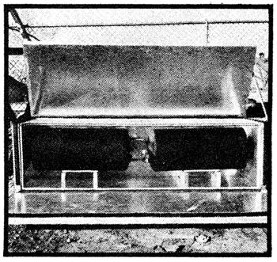

It seems that Steve Baer and his merry crew out in New Mexico just never stop dreaming up new ways to inexpensively harness the sun. (Steve's the guy, you know, who invented zomes and the barrel wall solar house heater and a whole bunch of other things.)
At any rate, now comes plans for the Bread Box Water Heater from Steve's company, Zomeworks. "We've done a great deal of work on this one," says Steve, "and feel it's a good system for doit yourselfers. The finished unit is bulky and heavy and not very suitable for mass production and sale but the simple construction methods make it right for backyard fabrication."
The heart of the Bread Box is a scrounged tank taken from an "ordinary" water heater. The glass lined container is set inside an insulated box which has a double or triple glazed top and front (to form a fairly efficient heat trap). An insulated second top and front can be closed over the glass panels during the night and on overcast days to retain the warmth captured by the trap. As an added bonus, when the insulated top and front are open, their aluminum inner surfaces reflect additional solar energy into the glazed and insulated box.
Understand? Well, whether or no, you're well advised to drop $2.50 in the mail to Zomeworks, Box 712, Albuquerque, New Mexico 87103 and ask for Steve's big foldout sheet of plans for the Bread Box Water Heater. It explains everything at a glance and is about as concise an education in the solar heating of water as anyone has ever put together. It'll also introduce you to some concepts such as "heat cliffs" and "droolers"-that can mean more to the operation of a solar heater than you might have imagined.
|
 |
|
|